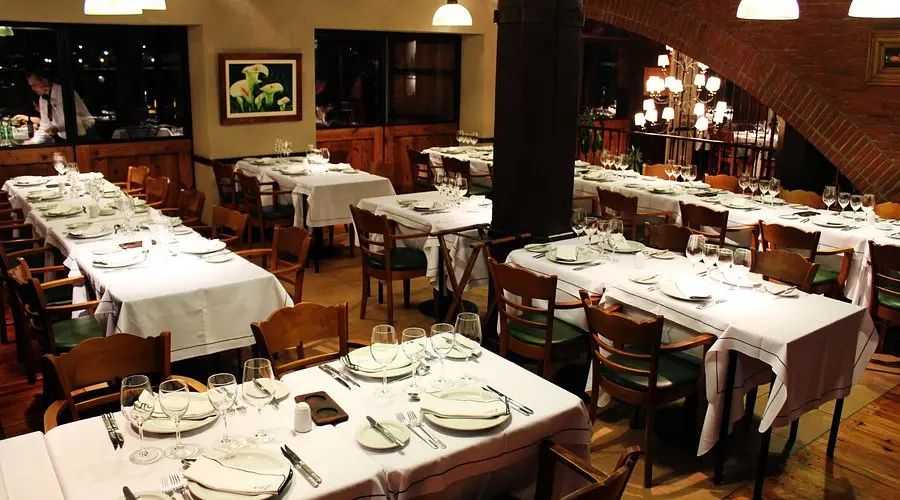

Our History: A Legacy of Flavor in the Heart of Magdalena
.webp)
In the quiet year of 1958, in the heart of picturesque Magdalena, Buenos Aires, where the scent of damp earth mingles with the whisper of the wind through the ancient trees, a place destined to become a benchmark of good local cuisine opened its doors for the first time: La Casona. Founded by the married couple Don Ramón and Doña Emilia, immigrants with a deep passion for the cuisine of their roots and a dream of sharing it with their new community, La Casona was born as a humble "bodegón," where homemade flavors and the warmth of the service were the main ingredients.
The Founders: Don Ramón and Doña Emilia
Don Ramón, with his hands weathered by work and a prodigious memory for family recipes, was the soul of the kitchen. Doña Emilia, with her welcoming smile and her people skills, greeted each diner as if they were a guest in their own home. Their shared vision was simple but powerful: to offer honest food, prepared with fresh ingredients and served with genuine affection.
Don Ramón's passion for grilling, inherited from his father, soon became one of La Casona's hallmarks. Doña Emilia, for her part, contributed the homey touch with her slow-cooked stews and traditional desserts, which evoked the flavors of her childhood.
The Origin of the Name "La Casona"
The name, "La Casona," was no coincidence. The restaurant was established in an old colonial-style house, with its exposed brick walls and an interior patio that invited long after-dinner conversations under the shade of the wisteria. This space, with its rustic charm and welcoming atmosphere, became the inspiration for the name that would resonate in the Magdalena community for decades.
The First Steps and the Evolution of the Menu
The early years were not easy. Don Ramón would wake up at dawn to select the best ingredients at the local market, while Doña Emilia prepared the sauces and slow-cooked stews, filling the air with aromas that would become La Casona's hallmark. The initial menu was simple but full of flavor: homemade empanadas, fresh hand-kneaded pasta, hearty stews, and, of course, the grilled meat recipes that Don Ramón learned from his father.
Over time, La Casona earned a place in the hearts of the people of Magdalena. It became the meeting point for families, friends, and special celebrations. The menu evolved, incorporating new dishes and adapting to changing tastes, but always maintaining the essence of homemade cuisine and respect for quality ingredients.
The Legacy Continues
Today, although Don Ramón and Doña Emilia are no longer physically with us, their legacy endures in every corner of La Casona. Their recipes continue to be prepared with the same care and dedication, passed down from generation to generation. The welcoming atmosphere of that old house remains intact, inviting diners to enjoy an experience that goes beyond the food: a connection with history, tradition, and the authentic flavor of Magdalena.
"For us, each dish is a tribute to our founders and an invitation to share the warmth of our table." - The Family of La Casona.
We Invite You to Be Part of Our History
Come and discover the living tradition of La Casona. Reserve your table and create your own memories in this corner of Magdalena where good food and family warmth come together in every experience.
Book Now See Our Menu